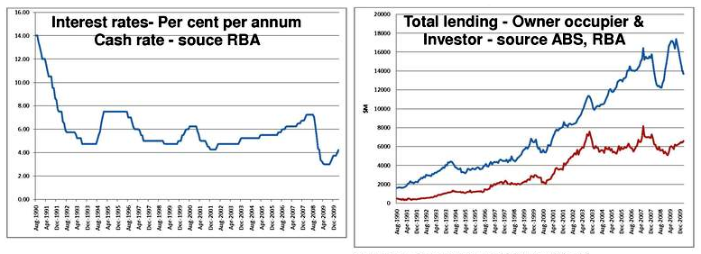
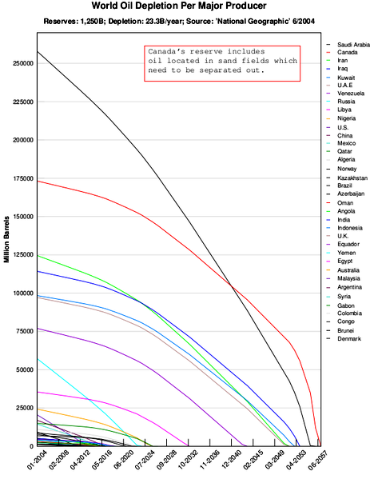

Long-lived assets are those that provide a company with a future economic benefit beyond the current year or operating period.
Differentiate between an asset and a long-lived asset
Assets are economic resources. It is anything tangible or intangible that is capable of being owned or controlled to produce value and that is held to have positive economic value is considered an asset. Simply stated, assets represent value of ownership that can be converted into cash.
Interestingly enough, employees are not considered to be assets, like machinery is, even though they are capable of generating future economic benefits. This is because an entity does not have sufficient control over its employees to satisfy the definition of an asset.
Long-lived assets provide a company with a future economic benefit beyond the current year or operating period. It may be helpful to remember that most, but not all, long-lived assets start as some sort of purchase by the company. Since non-current, or long-lived, assets are expected to last for longer than one year, accounting treats long-lived assets differently according to their useful life.
All assets are resources controlled by the enterprise as a result of past events and from which future economic benefits are expected to flow to the enterprise. When assets are expected to contribute to earnings for multiple years, such assets are referred to as long-lived, non-current or long-term assets. In general terms, it is "long-lived" because it is going to be around for some time and not quickly consumed.
The two major asset classes are tangible assets (e.g., buildings and equipment) and intangible assets (e.g. copy rights).
Differentiate between intangible and tangible assets
There are two major types of long-term assets: tangible and non-tangible. Tangible assets include fixed assets, such as buildings and equipment. Intangible assets includes non-physical resources and rights that a firm deems useful in securing an advantage in the marketplace. Examples of intangible assets are copyrights, trademarks, patents and computer programs, financial assets-- including such items as accounts receivable, bonds and stocks-- and goodwill.
Long-term investments are often referred to simply as "investments. " Long-term investments are meant to be held for many years and are not intended to be disposed of in the near future. They usually consist of three possible types of investments: investments in securities (such as bonds), common stock, or long-term notes. Other types of investments include investments in special funds-- e.g. sinking funds or pension funds-- and different forms of insurance.
Fixed assets-- also referred to as property, plant, and equipment-- are purchased for continued and long-term use in generating profit for a business. Fixed assets include asset land, buildings, machinery, furniture, tools, IT equipment-- e.g. laptops-- and certain limited resources-- e.g. timberland and minerals. Most of these, with the exception of land assets, are written off against profits over their anticipated life by accumulating depreciation expenses.
Property, plant, and equipment are tangible, long-lived assets used in the operations of the business. Land, natural resources, buildings, furniture, equipment, and machinery are included in this category. They are listed under the asset portion of the balance sheet. Capital expenditures are incurred to get the asset "up and running".
All money that is spent to get the asset up and running is capitalized as part as the cost of the asset.
Distinguish between the capitalized and expensed costs of an asset
If accounting principles allow recognition of an asset, the next issue concerns which items can be included and which items need to be expensed. The basic rule here is that—when recognizing the asset is allowed—all money that is spent to get the asset up and running is capitalized as part as the cost of the asset. Items spent to get the asset up and running is capitalized as part as the cost of the asset.
Items that can be capitalized when the firm purchases a machine include the machine itself, transportation, getting the machine in place, fees paid for having the machine installed and tested, the cost of a trial run, and alike. If the firm's own personnel are involved with installing the machine, their wage expenses can be allocated to the machine as well.
Examples that are excluded from the asset, and consequently are expense rather than capital costs, include the training of personnel to learn how to use the machine, unexpected damages while installing the machine, or the drinks and snacks to celebrate the machine's successful launch.
Figuring the cost of an item takes into consideration more than just the purchase price. Added to that would be any taxes paid, less any discounts received, cost of transportation that a company pays to bring the item to where it needs to go, and the cost of getting it ready for use.
So, for example, the cost of land would include any attorney fees, real estate fees, title fees, back taxes that need to be paid, and the cost of preparation for the lands intended use.
Buildings also have additional costs such as legal fees and remodeling fees to prepare it for use. The same goes for natural resources. Basically any costs that are necessary to get an item or land ready to use for business is included in the cost of the item.
Land is recognized at its historical cost or purchase price, and can include any other related initial costs spent to put the land into use.
Describe how land is reported on the financial statements
Land is defined as the ground occupied by a business' operations. This can include a company's headquarters, outside storage space or the company's parking lot.
Land is recognized at its historical cost, or the cost paid to purchase the land, along with any other related initial costs spent to put the land into use.
Land is a type of fixed asset, but unlike a majority of fixed assets, it is not subject to depreciation. All costs associated with acquiring land and putting it to use are included in the cost of land.
Land is listed on the balance sheet under the section for long-term or non-current assets. If the land's market value increases over time, its value on the balance sheet remains at historical cost.
For example, land purchased in 1988 for \$90,000, would still appear on the December 31, 2010 balance sheet at \$90,000, even though its market value is now \$300,000. This is based on the assumption that land is acquired for business use and not as an asset held for sale.
If at a future date the land is sold due to a business relocation or other reason, the difference between the land's market value and its historical cost will result in a gain or loss disclosed on the income statement. If the sale of land results in a gain, the additional cash or value received in excess of historical cost will increase net income for the period. If the sale results in a loss and the business receives less than the land's historical cost, the loss will reduce net income for the period.
The cost of a building is its original purchase price or historical cost and includes any other related initial costs.
Summarize how a company would calculate the cost of a building
A building is an asset used for commercial purposes and includes office buildings, warehouses, or retail establishments (i.e., convenience stores, "big box" stores, shopping malls, etc.). The cost of a building is its original purchase price or historical cost and includes any other related initial costs spent to put it into use. Similar to land, buildings are also a type of fixed asset purchased for continued and long-term use in earning profit for a business. Unlike land, buildings are subject to depreciation or the periodic reduction of value in the asset that is expensed on the income statement and reduces income. They also can incur substantial maintenance costs, which are expensed on the income statement and reduce an accounting period's income. Delays in construction can effect the total cost of a building.
Buildings are listed at historical cost on the balance sheet as a long-term or non-current asset, since this type of asset is held for business use and is not easily converted into cash. Since buildings are subject to depreciation, their cost is adjusted by accumulated depreciation to arrive at their net carrying value on the balance sheet. For example, on Acme Company's balance sheet, their office building is reported at a cost of \$150,000, with accumulated depreciation of \$40,000. The building's net carrying value or net book value, on the balance sheet is \$110,000.
If at a future date a building is sold due to a business relocation or other reason, any gain or loss on the sale is based on the difference between the building's net book value and the market sales price. If the sale results in a gain, the excess received over the building's net book value is disclosed on the income statement as an increase to the accounting period's income. If the sale results in a loss and the business receives less than book value, the loss is also disclosed on the income statement as a decrease to income.
The cost of equipment is the item's purchase price, or historical cost, plus other initial costs related to acquisition and asset use.
Describe how a company calculates the cost of a piece of equipment
Fixed assets, also known as non-current or tangible assets, include property, plant, and equipment. Fixed assets, according to International Accounting Standard (IAS) 16, are long range assets whose cost can be measured reliably.
The equipment's cost is calculated by adding the item's purchase price, or historical cost, to the other costs related to acquiring the asset. These additional costs can include import duties and deductible trade discounts and rebates.
Historical cost also includes delivery and installation of the asset, as well as the dismantling and removal of the asset when it is no longer in service. Equipment is subject to depreciation. Depreciation is a periodic reduction in an asset's value. It is disclosed on the income statement and appears as a contra-asset account on the balance sheet. Equipment is listed in a separate section within the balance sheet.
Since accounting standards state that an asset should be carried at the net book value, equipment is listed on the balance sheet at its historical cost amount. The cost is then reduced by accumulated depreciation to arrive at a net carrying value or net book value. A company is free to decide what depreciation method to use on the equipment.
When an equipment is sold, the sale of the asset can trigger a gain or a loss, depending on the difference between the equipment's net book value and its sale price. As with other assets, gain or losses on sales of equipment are disclosed on the income statement as a reduction or addition to income for the period.
The cost of an asset improvement is capitalized and added to the asset's historical cost on the balance sheet.
Describe how a company would account for costs associated with improving an asset
Asset or capital improvements are undertaken to enhance or improve a business asset that is in use. The cost of the improvement is capitalized and added to the asset's historical cost on the balance sheet. Since the cost of the improvement is capitalized, the asset's periodic depreciation expense will be affected, along with other factors used in calculating depreciation. Capital improvements should not be confused with regular maintenance expenses to maintain an asset's functionality, which are regarded as period costs that are expensed on the income statement and reduce income for the period. The cost of the improvement adds value to the asset.
If the capital improvement is financed, the interest cost associated with the improvement should not be capitalized as an addition to the asset's historical cost. Interest costs are not capitalized for assets that are not under construction. For example, Acme Company decides to add the company's logo to their delivery trucks and takes out a \$5,000 loan. In 201X, the interest expense is \$50; the interest expense is a period cost and reported on the income statement for 201X and not added to the asset's historical cost.
When the cost of a capital improvement is capitalized, the asset's historical cost increases and periodic depreciation expense will increase. Depending on the nature of the improvement, it is also possible that the asset's useful life and salvage value may change as a result. The change in periodic depreciation expense also can be impacted by the method used to calculate depreciation and may also have federal income tax consequences.
Asset improvements are capitalized and reported on the balance sheet because they are for expenses that will provide a benefit beyond the current accounting period. For example, costs expended to place the company logo on a delivery truck or to expand the space on a warehouse would be capitalized because the value they provide will extend into future accounting periods. Maintenance costs are expensed and reported on the income statement as a reduction to current revenues because they provide a benefit in the current accounting period and should be matched with the revenues earned during this period. Examples of expensed costs include payment of regular service maintenance on equipment and machinery.
The amount of interest cost incurred and/or paid during an asset's construction phase is part of an asset's cost on the balance sheet.
Explain how a company records interest on a construction loan
Interest is defined as a fee paid by a borrower of assets to the owner as a form of compensation for the use of the assets. It is most commonly the price paid for the use of borrowed money, or money earned by deposited funds. When an asset is constructed, a company typically borrows funds to finance the costs associated with the construction. The amount of cash borrowed will incur interest expense to the borrower; the interest paid by the borrower serves as interest income to the lender. The capitalization of interest costs involves adding the amount of interest expense incurred and/or paid during the asset's construction phase to the asset's cost recorded on the balance sheet. The asset's intended use should be for the generation of company earnings. Interest cost capitalization does not apply to retail inventory constructed or held for sale purposes.
Interest paid during delays in construction is excluded from the asset's cost.
The cost of interest incurred and/or paid is included as part of the historical cost of the asset under construction. No separate line item is needed on the balance sheet to disclose the interest costs associated with the asset. If any delays occur during the construction phase, the interest costs incurred during the delay are not capitalized. This interest cost is recorded as interest expense and reported as a period cost on the income statement rather than the balance sheet.
When the asset's construction is complete and the asset is ready for use, any additional interest expense incurred is no longer capitalized as part of the asset's cost. This interest is expensed on the income statement and reduces income for the accounting period.
Assets are valued using absolute value, relative value, or option pricing models, which require different inputs.
Differentiate between the absolute value, relative value, fair value and option pricing methods of valuing an asset
In finance, valuation is the process of estimating what something is worth. Items that are usually valued are a financial asset or liability. Valuations can be done on assets (for example, investments in marketable securities such as stocks, options, business enterprises, or intangible assets such as patents and trademarks) or on liabilities (e.g., bonds issued by a company). Valuations are needed for many reasons such as investment analysis, capital budgeting, merger and acquisition transactions, financial reporting, taxable events to determine the proper tax liability, and in litigation.
Valuation of financial assets is done using one or more of these types of models:
Common terms for the value of an asset or liability are fair market value, fair value, and intrinsic value. The meanings of these terms differ. For instance, when an analyst believes a stock's intrinsic value is greater (less) than its market price, an analyst makes a "buy" ("sell") recommendation. Moreover, an asset's intrinsic value may be subject to personal opinion and vary among analysts.
When a plant asset is purchased for cash, its acquisition cost is simply the agreed on cash price. However, when a business acquires plant assets in exchange for other non-cash assets (shares of stock, a customer's note, or a tract of land) or as gifts, it is more difficult to establish a cash price. This section discusses three possible asset valuation bases.
The general rule on non-cash exchanges is to value the non-cash asset received at its fair market value or the fair market value of what was given up, whichever is more clearly evident. The reason for not using the book value of the old asset to value the new asset is that the asset being given up is often carried in the accounting records at historical cost. In the case of a fixed asset, its value on the balance sheet is historical cost less accumulated depreciation, or book value. Neither amount may adequately represent the actual fair market value of either asset. Therefore, if the fair market value of one asset is clearly evident, a firm should record this amount for the new asset at the time of the exchange.
Sometimes, neither of the items exchanged has a clearly determinable fair market value. Then, accountants record exchanges of items at their appraised values as determined by a professional appraiser. An appraised value is an expert's opinion of an item's fair market price if the item were sold. Appraisals are used often to value works of art, rare books, antiques, and real estate.
The book value of a fixed asset asset is its recorded cost less accumulated depreciation. An old asset's book value is usually not a valid indication of the new asset's fair market value. However, if a better basis is not available, a firm could use the book value of the old asset.
Occasionally, a company receives an asset without giving up anything for it. For example, to attract industry to an area and provide jobs for local residents, a city may give a company a tract of land on which to build a factory. Although such a gift costs the recipient company nothing, it usually records the asset (land) at its fair market value. Accountants record gifts of plant assets at fair market value to provide information on all assets owned by the company. Omitting some assets may make information provided misleading. They would credit assets received as gifts to a stockholders' equity account titled Paid-in Capital—Donations.
There are additional factors to consider when valuing a business including competition, management stability, etc.
An important aspect of company valuation is determined when examining it in comparison to competitors. The company's relative size compared with other businesses in its industry, relative product or service quality, product or service differentiation from others in the industry, market strengths, market size and share, competitiveness within its industry in terms of price and reputation, and copyright or patent protection of its products are all important in this examination.
When examining this factor as a part of business valuation, one must consider if the management is skilled and experienced enough to maintain the company's position, and potentially improve it in the future. Several factors can indicate management ability: accounts receivable, inventory, fixed assets, and total asset turnover; employee turnover; condition of the facilities; family involvement, if any; quality of books and records; and sales, as well as gross and operating profit.
Consideration of financial strength entails a number of ratios, including a company's total debt to assets, long-term debt to equity, current and quick ratios, interest coverage, and operating cycle.
In accounting, profit is the difference between the purchase and the component costs of delivered goods and/or services and any operating or other expenses. This can help determine the financial stability of a company when viewing its profitability during its operating history, including the number of years the company has been in business, its sales and earnings trends, the life cycle of the industry as a whole, and returns on sales, assets and equity.
Along with the aforementioned considerations, a valuator must also keep in mind the economic conditions in which the company is operating, including the broad industry outlook and the impact of various IRS rulings and court cases that may affect the company's value.
In addition, the valuator must analyze the values of comparable companies to determine their relationship to the company's value. Intangible factors such as goodwill and non-compete agreements are important as well.
Finally, the valuator needs to consider the discount or capitalization rate of the company, specify what percentage of the company is being valued, and take into account any marketability or minority interest discounts.
Perhaps the most difficult part of the entire process is knowing how to combine all of these factors in a meaningful way to reach a value that will withstand any challenges by potential buyers, the IRS, dissatisfied partners or others.
Fair value should also be a consideration when valuing certain assets. Under US GAAP (FAS 157), fair value is the amount at which the asset could be bought or sold in a current transaction between willing parties, or transferred to an equivalent party, other than in a liquidation sale. This is used for assets whose carrying value is based on mark-to-market valuations; for fixed assets carried at historical cost (less accumulated depreciation), the fair value of the asset is not used. This is an example of an additional factor beyond book value that contributes to the overall valuation of a company.
Improvements to existing plant assets are capital expenditures because they increase the quality of services obtained from the asset.
Explain what a capital expenditure is and how a company would account for it.
Betterments or improvements to existing plant assets are capital expenditures because they increase the quality of services obtained from the asset. Because these add to the service-rendering ability of assets, firms charge them to the asset accounts.
For example, installing an air conditioner in an automobile that did not previously have one is a betterment. The debit for such an expenditure is to the asset account, Automobiles. Cars require regular maintenance. Such contingent liabilities can be estimated reliably based on historical cost and readily available information.
Occasionally, expenditures made on plant assets extend the quantity of services beyond the original estimate but do not improve the quality of the services. Since these expenditures benefit an increased number of future periods, accountants capitalize rather than expense them. However, since there is no visible, tangible addition to, or improvement in, the quality of services, they charge the expenditures to the accumulated depreciation account, thus reducing the credit balance in that account. Such expenditures cancel a part of the existing accumulated depreciation; firms often call them extraordinary repairs.
If an expenditure that should be expensed is capitalized, the effects are more significant. Assume now that USD 6,000 in repairs expense is incurred for a plant asset that originally cost USD 40,000 and had a useful life of four years and no estimated salvage value. This asset had been depreciated using the straight-line method for one year and had a book value of USD 30,000 (USD 40,000 cost—USD 10,000 first-year depreciation) at the beginning of 2010. The company capitalized the USD 6,000 that should have been charged to repairs expense in 2010. The charge for depreciation should have remained at USD 10,000 for each of the next three years. With the incorrect entry, however, depreciation increases.
Deferred maintenance is the practice of postponing maintenance activities such as repairs on both real property (i.e. infrastructure) and personal property (i.e. machinery) in order to save costs, meet budget-funding levels, or realign available budget monies. The failure to perform needed repairs could lead to asset deterioration and, ultimately, asset impairment. Generally, a policy of continued deferred maintenance may result in higher costs, asset failure, and in some cases, health and safety implications.
Under US GAAP (FAS 157), fair value is the amount at which an asset and its related costs could be bought or sold in a current market transaction between willing parties or transferred to an equivalent party other than in a liquidation sale. Therefore, asset repairs and maintenance are expensed on the income statement at the market value paid for the services rendered. Asset additions/improvements are capitalized to their respective asset accounts on the balance sheet at the market value of the addition.
Depreciation is defined as the expensing of the cost of an asset involved in producing revenues throughout its useful life.
Summarize the purpose of depreciating an asset
Depreciation is defined as the expensing of an asset involved in producing revenues throughout its useful life. Depreciation for accounting purposes refers the allocation of the cost of assets to periods in which the assets are used (depreciation with the matching of revenues to expenses principle). Depreciation expense affects the values of businesses and entities because the accumulated depreciation disclosed for each asset will reduce its book value on the balance sheet. Depreciation expense also affects net income. Generally the cost is allocated as depreciation expense among the periods in which the asset is expected to be used. Such expense is recognized by businesses for financial reporting and tax purposes. Cars depreciate in value throughout their useful life.
Depreciation expense reduces an accounting period's income even though the expense does not require a cash or credit payment. The reason for the expense is to comply with the matching principle required by accrual accounting. According to the principle, expenses are recognized regardless of cash payment when obligations are:
Depreciation expense can be calculated using a variety of methods. The depreciation method chosen should be appropriate to the asset type, its expected business use, its estimated useful life, and the asset's residual value. The expense is recognized and reported when the asset is placed into use and is calculated for each accounting period and reported under Accumulated Depreciation on the balance sheet and Depreciation Expense on the income statement. The amount reduces both the asset's value and the accounting period's income. A depreciation method commonly used to calculate depreciation expense is the straight line method.
There are four main factors that affect the calculation of depreciation expense: asset cost, salvage value, useful life, and obsolescence.
Summarize how a company would determine the appropriate depreciation method to use
There are four main factors to consider when calculating depreciation expense:
A company is free to adopt the most appropriate depreciation method for its business operations. Accounting theory suggests that companies use a depreciation method that closely reflects the operations' economic circumstances. So, companies can choose a method that allocates asset cost to accounting periods according to benefits received from the use of the asset. Most companies use the straight-line method for financial reporting purposes, but they may also use different methods for different assets. The most important criteria to follow: Use a depreciation method that allocates asset cost to accounting periods in a systematic and rational manner.
The following four methods allocate asset cost in a systematic and rational manner: straight line, units of production, sum-of-years-digits, and double-declining balance.
Here is an example of how to calculate depreciation expense under the straight-line method. Assume a purchased truck is valued at \$10,000, has a residual value of \$5,000, and a useful life of 5 years. Its depreciation expense for year 1 is $\frac{\$10000-\$5000}{5}=\$1000$ . The journal entry for this transaction is a debit to Depreciation Expense for \$1,000 and a credit to Accumulated Depreciation for \$1,000. The depreciation expense is reported on the income statement as a reduction to revenues and accumulated depreciation is reported as a contra account to its related Delivery Truck asset account (reduces the asset's cost to its book value) on the balance sheet.
Here is an example of how to calculate depreciation expense under the units of production. Assume a piece of machinery, purchased for \$100,000 with a residual value of \$40,000, is expected to produce 10,000 units over its useful life. First, calculate the depreciation per unit:
The depreciation expense for the period is the per unit amount multiplied by the period's production amount: if 1,000 units were produced, the depreciation expense is $1000 \cdot \$6 = \$6000$ . This amount is disclosed on the income statement and is part of the asset's accumulated depreciation on the balance sheet.
Here is an example of how to calculate depreciation expense under the sum-of-years-digits. Assume a piece of machinery is purchased for USD 100,000 with a residual value of \$40,000 and a useful life of 5 years. First, calculate the depreciation rate by adding the years of useful life, or $1+2+3+4+5=15$ . Second, calculate the depreciation expense for year 5:
For year 4, the calculation uses the asset's book value ($\$100,000 - \$20,000$ ) subtracted by its residual value ($\$40,000$ ) and multiplied by the rate for year 4 $\left( \frac{4}{15} \right)$ .
To calculate depreciation using the double-declining method, its possible to double the amount of depreciation expense under the straight-line method. To do this, divide 100 per cent by the number of years of useful life of the asset. Then, multiply this rate by 2. Next, apply the resulting double-declining rate to the declining book value of the asset (cost subtracted by accumulated depreciation). Ignore salvage value in making the calculations. At the point where book value is equal to the salvage value, no more depreciation is taken.
There are various methods that can calculate depreciation expense for the period; the method used should reflect the asset's business use.
Differentiate between the straight-line, units of production, sum of the years digits and double declining methods of calculating depreciation
Some of the most common methods used to calculate depreciation are straight-line, units-of-production, sum-of-years digits, and double-declining balance, an accelerated depreciation method. The Modified Accelerated Cost Recovery System (MACRS) is the current tax depreciation system used in the United States . The depreciation method for an automobile should reflect the asset's use throughout its life.
Straight-line depreciation has been the most widely used depreciation method in the U.S. for many years due to its simplicity. To apply the straight-line method, a company charges an equal amount of the asset's cost to each accounting period. The straight-line formula used to calculate depreciation expense is: (asset's historical cost - the asset's estimated salvage value) / the asset's useful life.
An example of how to calculate depreciation expense under the straight-line method -- assume a purchased truck is valued at USD 10,000, has a residual value of USD 5,000, and a useful life of 5 years. Its depreciation expense for year 1 is USD 1,000 (10,000 - 5,000 / 5). The journal entry for this transaction is a debit to Depreciation Expense for USD 1,000 and a credit to Accumulated Depreciation for USD 1,000. The depreciation expense is reported on the income statement as a reduction to revenues and accumulated depreciation is reported as a contra account to its related Delivery Truck asset account (reduces the asset's cost to its book value).
The units-of-production depreciation method assigns an equal amount of expense to each unit produced or service rendered by the asset. This method is typically applied to assets used in the production line. The formula to calculate depreciation expense involves two steps: (1) determine depreciation per unit ((asset's historical cost - estimated salvage value) / estimated total units of production during the asset's useful life); (2) determine the expense for the accounting period (depreciation per unit X number of units produced in the period).
An example of how to calculate depreciation expense under the units of production -- assume a piece of machinery, purchased for USD 100,000 with a residual value of 40,000, is expected to produce 10,000 units over its useful life. First, calculate the depreciation per unit -- 100,000 - 40,000 / 10,000, or USD 6 per unit. The depreciation expense for the period is the per unit amount multiplied by the period's production amount -- if 1,000 units were produced, depreciation expense equals USD 6,000 (1,000 * 6). This amount is disclosed on the income statement and is part of the asset's accumulated depreciation on the balance sheet.
Sum-of-years' digits is a depreciation method that results in a more accelerated write-off than straight line, but less accelerated than that of the double-declining balance method. Under this method, annual depreciation is determined by multiplying the depreciable cost by a series of fractions based on the sum of the asset's useful life digits. The sum of the digits can be determined by using the formula (n2+n)/2, where n is equal to the useful life of the asset.
To calculate depreciation expense under the sum-of-years-digits -- assume a piece of machinery is purchased for USD 100,000 with a residual value of 40,000 and a useful life of 5 years. First, calculate the depreciation rate by adding the years of useful life, or 1+2+3+4+5 (equal to 15). Second, calculate the depreciation expense for year 5 -- 100,000 - 40,000 * 5/15, or USD 20,000. For year 4, the calculation uses the asset's book value (100,000 - 20,000) subtracted by its residual value (40,000) and multiplied by the rate for year 4 (4/15).
The double-declining balance method is a type of accelerated depreciation method that calculates a higher depreciation charge in the first year of an asset's life and gradually decreases depreciation expense in subsequent years.
To calculate depreciation expense, use double the straight-line rate. For example, suppose a business has an asset with a cost of 1,000, 100 salvage value, and 5 years useful life. First, calculate the straight-line depreciation rate. Since the asset has 5 years useful life, the straight-line depreciation rate equals (100% / 5) or 20% per year. With double-declining-balance, double that rate to arrive at 40%. Apply the rate to the book value of the asset (cost subtracted by accumulated depreciation) and ignore salvage value. At the point where book value is equal to the salvage value, no more depreciation is taken.
Under MACRS, the capitalized cost (basis) of tangible property is recovered by annual deductions for depreciation over a specified life. The lives are specified in the Internal Revenue Service's (IRS) Tax Co de. The IRS publishes detailed tables of asset lives by asset class. The deduction for depreciation is computed under one of two methods (declining balance switched to straight line or only straight line ) at the election of the taxpayer. Certain limitations may apply.
The choice of depreciation method can impact revenues on the income statement and assets on the balance sheet.
Explain how the choice of depreciation method affects a company's revenue
Depreciation is a required expense for all business with fixed assets, excluding land. The choice of the depreciation method can impact revenues on the income statement and assets on the balance sheet. The four most common methods of depreciation that impact revenues and assets are: straight line, units of production, sum-of-years-digits, and double-declining balance. The depreciation method used to depreciate a car calculates an expense that reduces income.
When using the straight-line method, a company charges the same depreciation expense every accounting period throughout an asset's useful life, so the effect is a stable and uniform reduction in revenues and asset values in every accounting period of the asset's useful life.
Here is an example of how to calculate depreciation expense under the straight-line method. Assume a purchased truck is valued at \$10,000, has a residual value of \$5,000, and a useful life of 5 years. Its depreciation expense for year 1 is $\frac{\$10000-\$5000}{5}=\$1000$ . The journal entry for this transaction is a debit to Depreciation Expense for 1,000 and a credit to Accumulated Depreciation for 1,000. The depreciation expense is reported on the income statement as a reduction to revenues and accumulated depreciation is reported as a contra account to its related Delivery Truck asset account (reduces the asset's cost to its book value).
The units-of-production method is calculated based on the units produced in the accounting period. Depreciation expense will be lower or higher and have a greater or lesser effect on revenues and assets based on the units produced in the period.
Here is an example of how to calculate depreciation expense under the units of production. Assume a piece of machinery, purchased for \$100,000 with a residual value of \$40,000, is expected to produce 10,000 units over its useful life. First, calculate the depreciation per unit:
The depreciation expense for the period is the per unit amount multiplied by the period's production amount: if 1,000 units were produced, the depreciation expense is $1000 \cdot \$6 = \$6000$ . This amount is disclosed on the income statement and is part of the asset's accumulated depreciation on the balance sheet.
Sum-of-years-digits depreciation is determined by multiplying the asset's depreciable cost by a series of fractions based on the sum of the asset's useful life digits. Sum-of-years digits is a depreciation method that results in a more accelerated write off of the asset than straight line but less than double-declining balance method. This method will reduce revenues and assets more rapidly than the straight-line method but not as rapidly as the double-declining method.
Here is an example of how to calculate depreciation expense under the sum-of-years-digits. Assume a piece of machinery is purchased for USD 100,000 with a residual value of \$40,000 and a useful life of 5 years. First, calculate the depreciation rate by adding the years of useful life, or $1+2+3+4+5=15$ . Second, calculate the depreciation expense for year 5:
For year 4, the calculation uses the asset's book value ($\$100,000 - \$20,000$ ) subtracted by its residual value ($\$40,000$ ) and multiplied by the rate for year 4 $\left( \frac{4}{15} \right)$ .
Double-declining balance is a type of accelerated depreciation method. This method records higher amounts of depreciation during the early years of an asset's life and lower amounts during the asset's later years. Thus, in the early years, revenues and assets will be reduced more due to the higher depreciation expense. In later years, a lower depreciation expense can have a minimal impact on revenues and assets. However, revenues may be impacted by higher costs related to asset maintenance and repairs.
To calculate depreciation using the double-declining method, its possible to double the amount of depreciation expense under the straight-line method. To do this, divide 100 per cent by the number of years of useful life of the asset. Then, multiply this rate by 2. Next, apply the resulting double-declining rate to the declining book value of the asset (cost subtracted by accumulated depreciation). Ignore salvage value in making the calculations. At the point where book value is equal to the salvage value, no more depreciation is taken.
An impairment loss is recognized and accrued through a journal entry to record and reevaluate the asset's value.
Explain how to assess an asset for impairment
Business assets should be tested for impairment when a situation occurs that causes the asset to lose value. An impairment loss is recognized and accrued to record the asset's revaluation. Once an asset has been revalued, fluctuations in market value are calculated periodically. Certain intangible assets, such as goodwill, are tested for impairment on an annual basis. Impairment losses can occur for a variety of reasons:
A loss on impairment is recognized as a debit to Loss on Impairment (the difference between the new fair market value and current book value of the asset) and a credit to the asset.The loss will reduce income in the income statement and reduce total assets on the balance sheet. The cost of an impaired building beyond repair is disclosed as a loss on the income statement.
For an example, take a retail store that is recorded on the owner's balance sheet as a non-current asset worth USD 20,000 (book value or carrying value is USD 20,000). Based on the asset's book value, assume the store has a historical cost of USD 25,000 and accumulated depreciation of USD 5,000. A hurricane sweeps through the town and damages the store's building. After assessing the amount of the damage, the owner calculates that the building's market value has fallen to USD 12,000.
The Loss on Impairment is calculated to be USD 8,000 (20,000 book value - 12,000 market value)
The journal entry to recognize the Loss on Impairment:
The Loss on Impairment for USD 8,000 is recognized on the income statement as a reduction to the period's income and the asset Store Building is recognized at its reduced value of USD 12,000 on the balance sheet (25,000 historical cost - 8,000 impairment loss - 5,000 accumulated depreciation). After the impairment, depreciation expense is calculated using the asset's new value.
Business assets that have suffered a loss in value are given two tests to measure and recognize the amount of the loss.
Summarize the steps a company takes to measure an assets impairment
Business assets that have suffered a loss in value are subject to impairment testing to measure and recognize the amount of the loss. The impairment of a building is measured by determining the amount of value the asset has lost.
To measure the amount of the loss involves two steps:
The use of undiscounted cash flows in determining impairment loss assumes that the cash flows are certain and risk-free, and the timing of the cash flows is ignored. For example, assume a new USD 20,000 sewing machine, with a useful of life of 3 years, is damaged and has a new book value of USD 10,000.
The expected undiscounted cash flows generated by the machine after the damage are:
Since the asset's future undiscounted cash flows are USD 6,000, less than the USD 10,000 book value, an impairment loss has occurred. Use the market value of the sewing machine, USD 20,000, and deduct the USD 10,000 book value to arrive at an impairment loss of USD 10,000.
Certain assets with indefinite lives require an annual test for impairment. Trademarks and Goodwill are examples of intangible assets that are tested for impairment on an annual basis.
Fixed asset values can be revised to reflect an increase or decrease in value; upward revisions can recover earlier impairment losses.
Explain when it would be applicable to revalue an impaired asset
Under US GAAP, once an asset is impaired its value cannot be increased regardless of what its fair market value is; once the value of an asset is decreased, it stays at that value unless its market value declines again. US GAAP does require that a business impair its assets if its fair market value decreases.
Under International Financial Reporting Standards, once a fixed asset has been revalued its book value can be adjusted periodically to market value using the cost model or the revaluation model. The cost model records an asset at its historical cost. If an asset becomes impaired and an impairment loss results, the asset can fall under the revaluation model that allows periodic adjustments to the asset's book value. Future upward revisions to the value of the asset can recover losses from prior years under the revaluation model. Only assets accounted for under the revaluation model can have their book value adjusted to market value.
A revaluation that increases or decreases an asset's value can be accounted for with a journal entry. The asset account is debited (increased) for the increase in value or credited (decreased) for a decrease in value. An increase in the asset's value should not be reported on the income statement; instead an equity account is credited called "Revaluation Surplus. " Revaluation surplus is reported in the other comprehensive income sub-section of the owner's equity section in the balance sheet. The revaluation surplus account accounts for increases in asset value, and it also offsets any downward revisions, such as an impairment loss, in asset value. When the credit balance in the revaluation surplus account zeros out, an impairment loss is reported on the income statement.
After an asset have been revalued, the asset's depreciation expense must change to reflect the new value. The asset's new book value can be divided by its remaining useful life to adjust the amount of depreciation expense reported on the income statement after the revaluation.
The disposal sale of an asset is similar to a regular asset sale, where cash proceeds are received and a loss or gain may be realized.
Summarize how a company records the sale of an asset for disposal purposes
The sale of an asset for disposal purposes is similar to a regular asset sale. Unlike a regular disposal of an asset, where the asset is abandoned and written off the accounting records, an asset disposal sale involves a receipt of cash or other proceeds. When the sale takes places, a journal entry is recorded that (1) updates depreciation expense, (2) removes the asset and its accumulated depreciation account off the balance sheet, (3) increases cash or other asset with the amount of proceeds received, and (4) records a gain or loss on the sale.
At the time of disposal, depreciation expense should be recorded to update the asset's book value. A journal entry is recorded to increase (debit) depreciation expense and increase (credit) accumulated depreciation. Depreciation expense is reported on the income statement as a reduction to income. The increase in the accumulated depreciation account reduces the asset to its current book value. A business disposing of a building through a sale receives cash proceeds and may realize a gain or loss.
The proceeds received on the asset sale are compared to the asset's book value to determine if a gain or loss on disposal has been realized. If the proceeds are less than book value, a loss on disposal has been realized. If the proceeds are more than book value, the result is a gain. The proceeds from the sale will increase (debit) cash or other asset account. Depending on whether a loss or gain on disposal was realized, a loss on disposal is debited or a gain on disposal is credited. The loss or gain is reported on the income statement. The loss reduces income, while the gain increases it.
The entry to remove the asset and its contra account off the balance sheet involves decreasing (crediting) the asset's account by its cost and decreasing (crediting) the accumulated depreciation account by its account balance. Prior to zeroing out their account balances, these accounts should reflect the updated depreciation expense computed up to the disposal sale date.
Involuntary conversion of assets occurs when disposal is due to unforeseen circumstances, such as theft or casualty.
Explain how a company accounts for the involuntary conversion of an asset
The involuntary conversion of an asset occurs when an asset must be disposed of due to unforeseen circumstances, such as theft, casualty, or condemnation. The forced disposal of the asset may result in cash proceeds from the filing and payment of an insurance claim on the asset or the receipt of a casualty award. If the monetary exchange is more than the asset's book value, updated for depreciation up to the disposal date, a gain on disposal results; if the proceeds are less, the disposal realizes a loss. Unlike a voluntary sale, involuntary conversion of assets can involve an asset exchange for monetary or non-monetary assets. An airplane manufacturer's involuntary conversion of a plane can result in a loss or gain on the income statement.
Monetary assets consist of cash or cash-equivalent assets. An involuntary conversion involving an exchange for monetary assets is accounted for the same way as a typical sales transaction, with a gain or loss reported in the income statement in the period the conversion took place. The gain or loss is the difference between the proceeds received and the book value of the asset disposed of, updated for current depreciation expense.
Non-monetary assets are not easily converted to cash, such as equipment. An exchange between non-monetary assets should be analyzed to determine if the exchange has commercial substance. An asset exchange with commercial substance will cause future cash flows to materially change. If the exchange has commercial substance, the asset received is recorded on the balance sheet at either (1) the market value (purchase price) of the asset received or (2) the market value of the asset given up plus any cash paid. If the value of the new asset exceeds the book value of the old asset, a gain is recognized. If the new asset's value is less, a loss is recognized.
For non-monetary asset exchanges without commercial substance, the expectation is that the exchange will not materially alter future cash flows. This type of exchange usually involves like-kind property, such as exchanging a truck for another truck. The asset received is recorded on the balance sheet at the book value of the asset given up plus any cash paid. Gains or losses on these transactions are not recognized.
The depletion base is the total cost of a natural resource and includes acquisition, exploration, development, and restoration costs.
Differentiate between percentage depletion and cost depletion
Depletion is a method of recording the use of natural resources over time. It is the amount of resources used in each accounting period that is expensed for U.S. tax and financial reporting purposes. Depletion is similar to depreciation, in that it is a cost recovery system for accounting and tax reporting. Industries involved in mining, timber, petroleum, and the extraction or use of natural resources are the types of businesses most affected by depletion. The depletion base is the total cost of the natural resource. It can include costs related to the acquisition of the asset, exploration, development and preparation of the asset for use, and performance of restoration work .
Types of costs include acquisition, exploration, development, and restoration costs.
To calculate, multiply a certain percentage, specified for each mineral, by your gross income from the property during the tax year. For this purpose, the term "property" means each separate interest business owned in each mineral deposit in each separate tract or parcel of land. Businesses can treat two or more separate interests as one property or as separate properties.
This is an accounting method by which costs of natural resources are allocated to depletion over the period that make up the life of the asset. Cost depletion is computed by (1) estimating the total quantity of mineral or other resources acquired and (2) assigning a proportionate amount of the total resource cost to the quantity extracted in the period.Cost Depletion FormulaAccording to the IRS Newswire, over 50 percent of oil and gas extraction businesses use cost depletion to figure their depletion expense. Mineral property includes oil and gas wells, mines, and other natural deposits (including geothermal deposits). The cost depletion formula for financial reporting purposes is the total investment cost of the property / (the quantity extracted during the period / the property's total estimated production). When calculating cost depletion for tax purposes, multiply the formula by the property's adjusted basis or the property's historical cost subtracted by depletion expense for prior years.
The term write-off describes removing an asset whose value is zero and is no longer in use from the balance sheet.
Explain how to write off a natural resource asset
The term write-off describes a reduction in recognized value. In accounting terminology, it refers to recognition of the reduced or zero value of an asset no longer in use. Assets that are natural resources, which are used throughout the course of business, are subject to periodic depletion. When the asset has been depleted to a value of zero or its value has dropped to less than its salvage value, the asset's remaining book value, as calculated by the original historical cost minus the depletion of prior years, is removed from the balance sheet through a write-off. An asset write-off removes an asset's cost off the balance sheet and expenses it on the income statement.
An asset is written off the balance sheet by recording a journal entry. The write-off journal entry moves the asset's book value to the income statement, where it is reported as an expense or loss and reduces the accounting period's income. The journal entry will credit (decrease) the asset's account balance (equal to its historical cost) and debit (decrease) the balance in the accumulated depletion account. The asset's book value (historical cost minus accumulated depletion) is the amount debited (increased) to an expense or loss account reported on the income statement for the accounting period. The decrease in the asset and accumulated depletion accounts reduces the balance to zero and removes the account from the balance sheet.
Asset write-offs should not be confused with impairment. A write-off journal entry removes an asset not in use and its related contra account (accumulated depletion) from the balance sheet. If the asset has suffered a permanent reduction in value, the amount of the asset impairment is expensed on the income statement as a reduction to the accounting period's income. The asset's balance is reduced by the impairment amount to reflect the asset's new economic value and the account remains on the balance sheet.
Recoverable reserves are the amount of a natural resource present and their value is used to compute the resource's depletion expense.
Explain how to calculate a natural resources recoverable reserve
Natural reserves supplied by nature, such as ore deposits, mineral deposits, oil reserves, gas deposits, and timber stands, are natural resources or wasting assets. Natural resources represent inventories of raw materials that are consumed (exhausted) through extraction or removal from their natural setting (e.g. removing oil from the ground). On the balance sheet, natural resources are part of non-current assets and classified as separate groups, such as oil reserves. The amount of recoverable reserves are used to compute an asset's depletion.
Businesses that are involved in the recovery of natural resources, such as mining, growing timber, and extracting petroleum will incur costs related to the resource recovery. The natural reserves recovered involve several costs related to acquisition, exploration, development, and restoration of the natural resources. These costs are reported on the balance sheet and assigned to the asset in question, such as "timber stands" or "oil reserves. " They are reported at their total cost, less accumulated depletion.
As these natural resources are used throughout the course of business, their value will be reduced by periodic depletion. Depletion expense allows a business to account for the reduction in value of natural reserves. Similar to depreciation, depletion reflects the use and reduction of value of an asset over the course of time. Two methods are available to calculate depletion: the cost and percentage method. Cost depletion is the most commonly used by oil and gas companies. The depletion amount can also vary when calculating it for financial reporting and tax purposes, so it can have a different effect on the accounting period's income and income tax expense.
Resources supplied by nature are subject to special accounting conventions to calculate cost and depletion.
Define a natural resource and how to properly account for its depletion
Resources supplied by nature, such as ore deposits, mineral deposits, oil reserves, gas deposits, and timberstands, are natural resources or wasting assets. Natural resources represent inventories of raw materials that can be consumed (exhausted) through extraction or removal from their natural setting (e.g., removing oil from the ground).
On the balance sheet, we classify natural resources as a separate group among noncurrent assets under headings such as "timber stands" and "oil reserves. " Typically, we record natural resources at their cost of acquisition plus exploration and development costs; on the balance sheet, we report them at total cost less accumulated depletion. (Accumulated depletion is similar to the accumulated depreciation used for plant assets. ) When analyzing the financial condition of companies owning natural resources, exercise caution because the historical costs reported for the natural resources may be only a small fraction of their current value.
Depletion is the exhaustion that results from the physical removal of a part of a natural resource. In each accounting period, the depletion recognized is an estimate of the cost of the natural resource that was removed from its natural setting during the period. To record depletion, debit a depletion account and credit an accumulated depletion account, which is a contra account to the natural resource asset account.
By crediting the accumulated depletion account instead of the asset account, the original cost of the entire natural resource is continues to be reported on the financial statements. Thus, statement users can see the percentage of the resource that has been removed. To determine the total cost of the resource available, combine this depletion cost with other extraction, mining, or removal costs. Then assign this total cost to either the cost of natural resources sold or the inventory of the natural resource still on hand. Thus, all, some, or none of the depletion and removal costs recognized in an accounting period can be expensed, depending on the portion sold. If all of the resource is sold, expense all of the depletion and removal costs. The cost of any portion not yet sold is part of the cost of inventory.
To compute depletion charges, companies usually use the units-of-production method. They divide total cost by the estimated number of units–tons, barrels, or board feet–that can be economically extracted from the property. This calculation provides a per-unit depletion cost.
For example, assume that in 2010 a company paid \$650,000 for a tract of land containing ore deposits and \$100,000 in exploration costs. The results indicated that approximately 900,000 tons of ore can be removed economically from the land, after which the land will be worth \$50,000. The company incurred costs of \$200,000 to develop the site, including the cost of running power lines and building roads. Total cost subject to depletion is the net cost assignable to the natural resource, plus the exploration and development costs. When the property is purchased, a journal entry assigns the purchase price to the two assets purchased–the natural resource and the land.
In some instances, companies buy only the right to extract the natural resource from someone else's land. When the land is not purchased, its residual value is irrelevant and should be ignored. If there is an obligation to restore the land to a usable condition, the firm adds these estimated restoration costs to the costs to develop the site. In the example where the land was purchased, the total costs of the mineral deposits equal the cost of the site (\$650,000) (minus the residual value of land and \$50,000) plus costs to develop the site (\$300,000), or a total of \$900,000. The unit (per ton) depletion charge is $\frac{\$900,000}{900,000 \text{ tons}}=\$1$ per ton.
A business must report an asset's acquisition cost, how it is depreciated, any subsequent expenditures tied to it, and how it is disposed.
Explain how to value and report an asset from its acquisition to its disposal
One section of the balance sheet consists solely of the business's property, plant, and equipment . To be included in this section of the balance sheet, the asset must last longer than a year, be tangible, be used in business operations, and cannot be held for resale. Common examples of items that would be included are buildings, machinery, and delivery vehicles. Accounting for these types of assets involves following four steps.
The acquisition cost is how the asset is valued on a business's balance sheet. The acquisition cost equals the amount of cash and other property given up to acquire it and place it into operation. All expenses that are normal, reasonable, and necessary to obtain and place the property into use are included in the acquisition cost. Costs associated with fixing used property so it can be used by the company are included in the acquisition costs. Unnecessary costs associated with initially transporting the property to where it needs to go is not included in the acquisition cost.
The act of using an asset can often cause it to lose value because it physically wears out the property. Or an asset can be inadequate for future needs or become obsolete. In all of these cases, the underlying value of the asset decreases over time. Depreciation is a measure of how property values decrease. Depreciation does not apply to assets that do not lose value over time, such as land.
Depreciation can be calculated different ways for different types of asset. However, there are four things that a business must consider when determining how it will depreciate the asset. The first is the cost of the asset. Next, how much will the company be able to sell the asset for when it is of no longer of use to the company, or its residual value? The value could be based on its scrap value or the fact that the asset may have value to others as is. The company should also determine how long it will be able to use the asset. This period is known as the asset's useful life.
Finally a business must choose a depreciation method. The most common depreciation method type is "straight-line," where the depreciation rate is calculated by subtracting the asset's residual value from its acquisition cost and dividing the result by its useful life.
To insure that the balance sheet reflects the accurate value of its assets, a business will not decrease the value of each asset as it depreciates. Instead, it will record a negative asset balance called accumulated depreciation. By adding the accumulated depreciation with the asset's value, a person reading the balance sheet will be able to determine the asset's current value.
A business can spend money on an asset that will increase its overall value in one of two ways. The first is if the business improves the asset in some way that makes it more valuable. A way an asset may become more valuable is if the business somehow enhances the asset's ability to provide services. For example, if a business installs GPS into one of its trucks so it can make deliveries more efficiently, the expenditure has improved the value of the asset. In that case, the cost of acquiring the improvement is added to the value of the asset account.
A business can also spend money on an asset that does not improve its ability to provide a benefit to the business but extends the asset's useful life. For example, a business may give one of its trucks an overhaul so that it will last another five years instead of another two. In this case, the value of the asset account is not adjusted but its accumulated depreciation account is decreased.
Recording the disposal of an asset requires taking several steps. First, the business must ensure that the asset's depreciation account is up to date. Then the business must write off the asset balance as well as its accumulated depreciation balance. Then it must record any cash or property it received in exchange for the asset. Finally, it must record any gain or loss it sustained on the disposal of the property.
The Return on Total Assets ratio measures how effectively a company uses its assets to generate its net income.
State the formula to calculate return on total assets
The Return on Total Assets ratio is similar to the Asset Turnover Ratio in that both measure how effective a business's assets are in generating returns for the business. But while the asset turnover ratio is focused on the business's sales, return on assets is focused on net income. Sales is a measure of how much money the company can generate while net income is a measure of how much the business earns after its pays all of its financial obligations.
Return on Total Assets
Return on total assets equals the total net income the business earns in a given accounting period divided by the average value of the business's total assets for the same period. You calculate the average value of the total assets by adding the value of the business's total assets at the beginning of the period and the value of the business's total assets at the end of the period. You then divide the sum by two.
Return on Total Fixed Assets
Return on Total Fixed Assets equals the business's net income divided by the average value of the business's total fixed assets for the accounting period. You calculate the average value of the business's fixed assets by adding the value of the business's total fixed assets at the beginning of the accounting period to the value of the total fixed assets at the end of the period. You then divide the sum by two.
Using Return on Assets to Assess Company Performance
The greater the value of the ratio, the better a company is performing. However, merely determining a business's return on asset ratio is insufficient to get a good understanding on how a business is doing. To accurately gauge a company's performance, you need to put the value in context. This is generally done by comparing the current return on assets ratio to the company's past performance or to a competitor's ratio.
The asset turnover ratio is a measure of how well a business is using all of its assets to generate sales.
State the formula to calculate the asset turnover ratio
It can be difficult to review a company's balance sheet and get much meaning out of it with just a glance. While it may be impressive that a business has millions of dollars worth of equipment, it is hard to determine what that means from a business perspective.
One way of putting those values into context is to use them to generate ratios. One ratio that analysts use to evaluate a company's strength is the asset turnover ratio.
Asset Turnover Ratio
The asset turnover ratio is a measure of how well a business is using all of its assets to generate sales. The ratio is calculated by dividing the total sales for the accounting period by the average value of the assets the business owned during the year. The average value is calculated by adding the value of assets the business owned at the beginning of the period to the value of the assets owned at the end of the period, and then dividing by two.
Fixed-Asset Turnover Ratio
The fixed-asset turnover ratio is calculated in a similar manner, except instead of focusing all of the business's assets, the ratio is calculated using the business's fixed assets. This ratio measures how well a business is using its fixed assets to generate sales. To calculate the fixed asset turnover ratio, divide the total sales for the accounting period by the average fixed asset balance for the accounting period. The average fixed asset balance equals the beginning balance of fixed assets for the period plus the ending balance of fixed assets for the period, then dividing by two.
How to Use These Ratios
The higher the ratio, the better the business is performing in terms of sales. However, these ratios generally need context to better understand them. While a ratio may appear low by itself, it may actually be doing well overall. Generally, an analyst will compare a business's asset turnover ratio to the business's ratios from prior accounting periods or to the business's competitor's asset turnover ratio for the same period.
{kind=link}
{kind=link}